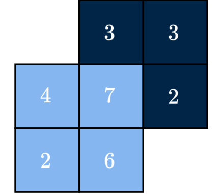
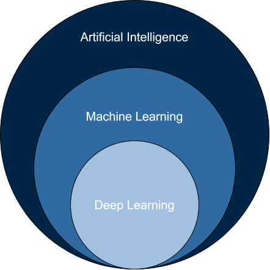
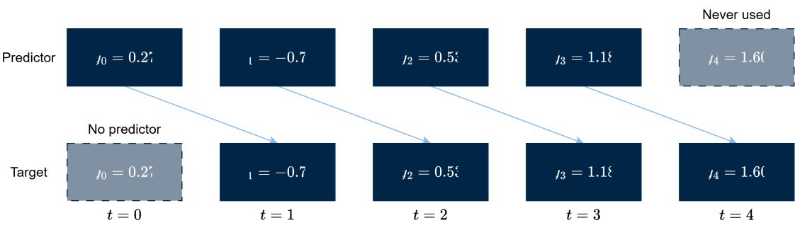
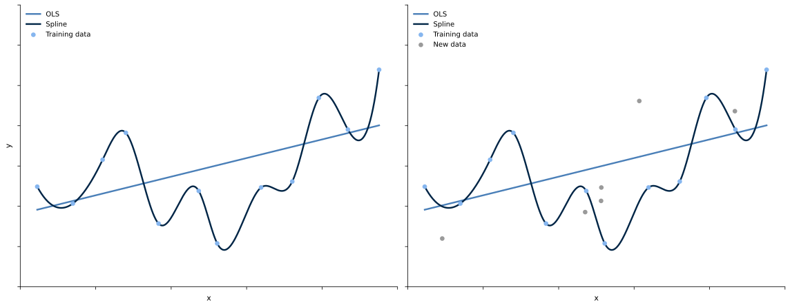
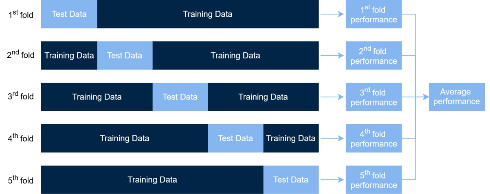
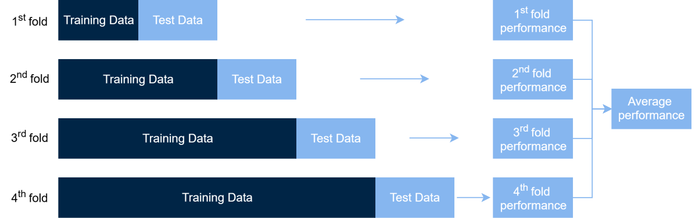
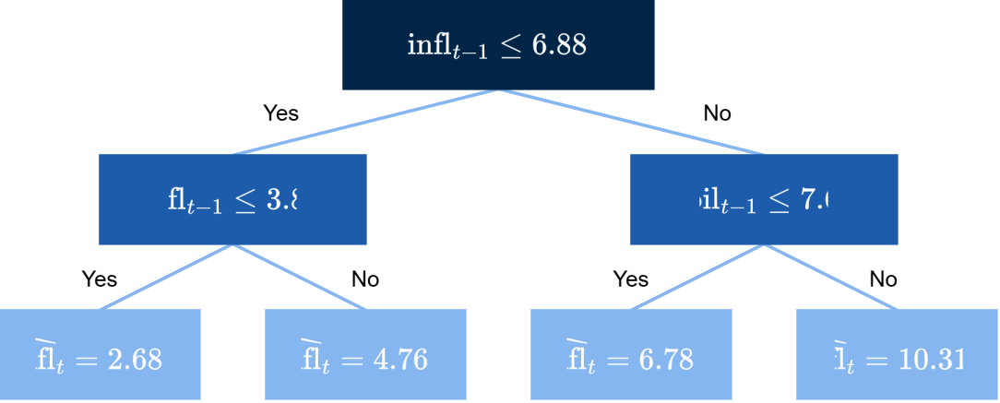
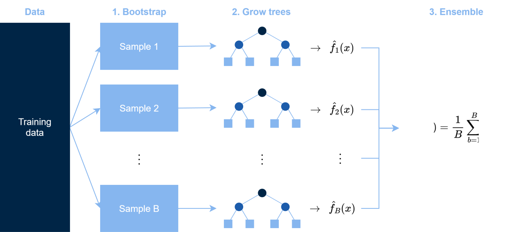

Forecasting with Machine Learning
2026-11-02
NumPy
Arrays, operations, subsetting, NaNs, random draws, lagging
pandas
Data frames, wrangling, time-indexed data
Machine learning
Definitions and scope
The forecasting pipeline
Data wrangling, model selection, evaluation
scikit-learn
OLS, LASSO, ridge, random forests, pipelines
Python is the programming language used in this course.
NumPy Arrays and numerical tasks
pandas Data frames and wrangling
scikit-learn All non-deep-learning models
PyTorch Deep learning
Go-to library for numerical tasks – mean, logs, etc.
Data is stored in arrays, say arr
Arrays general term for scalars, vectors, matrices and tensors:
\[ \texttt{arr}\in\mathbb{R},\quad \texttt{arr}\in\mathbb{R}^n,\quad \texttt{arr}\in\mathbb{R}^{n\times m},\quad \texttt{arr}\in\mathbb{R}^{m_1\times \cdots \times m_n} \]
Tip
If not quite confident in scalars, vectors, matrices, tensors, refer to the Maths Brush-Up
Always import library with the standard alias,

Associated NumPy code: arrT = np.array([[[4, 7], [2, 6]], [[3, 3], [1, 2]]])
arr[row, col]Zero-indexed, but the end of the interval is excluded
arrM[RowIdx, ColIdx] is wrong – it only selects three data points
::2 \(\to\) every second index
Extract from arrM, every 4th column of rows 20 to 60 in increments of 3.
Adding a number of NaNs to arrM,
.copy() is required – otherwise the original receives NaNs too
Determine whether NaNs are present and their count,
We can handle NaNs by e.g. replacing them with values of our choice, e.g., 0 or the mean,
For time series, compute the mean on training data only
np.isnan(arrMNaN) identifies the NaNs.any(axis=1) – identifies any NaN in each row~ flips the selection to retain the clean rowsManipulating NaNs is dangerous – choose replacement values with care
A 1D array has shape (n,), but many functions expect a 2D array.
Reshape it into a column vector with .reshape(-1, 1):
-1 is a placeholder to let Python determine the number of rows, while 1 dictates one column
R’s (at the time) superior data handlingAlways import library with the standard alias,
{key: value}Keys are unique, usually strings; values can be anything.
We will use dictionaries for data frames, hyperparameter grids, and collecting results
Defining a pandas series,
The left-most column is the index. It can also be set afterwards with series.index=[...]
Defining a pandas data frame,
pd.read_csv() is an important function. Example with toy_data.csv,
Tip
Use df.to_csv("filename.csv") to write a data frame to .csv
Also useful: df.describe(), df.isna().sum(), df.dropna()
Use .iloc for index-based subsetting, .loc for label-based subsetting,
As opposed to .iloc and NumPy, the end of .loc intervals is included
Subsetting by name alone (cannot subset rows simultaneously),
Subsetting by condition,

Deep learning is a subset of machine learning, which in turn is a subset of artificial intelligence.
Pre-processing
Explore distributions, check for NaNs and outliers, etc.
Lagging
Construct predictors from past values only (time series forecasting)
Splitting
Reserve the test set before further modelling
Standardizing
Standardize on the training data, apply to both (all) data sets
Tuning
Cross-validate hyperparameters on the training set
Fitting
Fit the model on the merged training and validation sets with the selected hyperparameters
Evaluating
Compare models on the held-out test set
We distinguish between classification and regression, categorical and numerical targets
Classification
Regression
Before modelling always inspect the raw data.
R to Python is available in the Colab Notebook “Chapter 3 Translation”\[Y_t = f(X_{t-1}) + \varepsilon_t\]
To forecast \(Y_t\) we may only use what was known at \(t-1\), so the predictor is shifted back one period. Assume a random walk for simplicity – yet the concept holds for any predictor,
Exercises 16 and 17 pertain to lagging in pandas with .shift(1)

Example of lagging a time series by one period. The top row is the original series, the bottom row is the lagged series.
Each arrow is a forecast in the random walk: standing at \(t-1\) with \(y_{t-1}\), predict \(y_t\).
y[:-1] is the top row without its last box, y[1:] the bottom row without its first box.
In cross-sectional modeling, data is usually split randomly
In time series modeling, data must be split chronologically, such as,
\(Z\)-score standardization: Subtract the mean, divide by the standard deviation,
\[ z_t = \frac{x_t - \hat{\mu}}{\hat{\sigma}} \]
Yields \(z_t\) with zero mean and unit variance.
Standardize
Standardization unnecessary
Fit the scaler on training data only, then apply to the test set
Fitting on the full sample leaks future distributional information
The expected squared forecast error decomposes as
\[\mathrm{E}\!\left[(\hat{y} - y)^2\right] = \underbrace{\mathrm{Bias}^2}_{\text{underfitting}} + \underbrace{\mathrm{Variance}}_{\text{overfitting}} + \underbrace{\sigma^2}_{\text{irreducible}}\]
High bias
High variance
Regularized models, e.g., LASSO, trade off bias for variance, while ensembles such as random forests reduce variance

MSE OLS (left-hand side): 0.262, MSE spline (left-hand side): 0.000, MSE OLS (right-hand side): 0.209, MSE spline (right-hand side): 0.394.
Primary modeling library covering a large array of models:
Advantage: unified and streamlined syntax – fit \(\to\) predict \(\to\) score (\(R^2_{\text{OOS}}\))
Generally import functions as needed, e.g.,
Import from sklearn and not scikit-learn
Quarterly US macroeconomic data, 1959Q1–2009Q3, from statsmodels
inflRefer to the Colab Notebook “matplotlib documentation” and the examples to learn about plotting with matplotlib and its pyplot module
\[ \hat{y}_t = y_{t-1} \]
Intuitive and interpretable, yet possibly challenged by heteroskedasticity and serial correlation
Implementation on previous slide follows the standard scikit-learn blueprint,
Initialize model object
ols = LinearRegression() assigns a linear regression object to ols
Fitting/training model
.fit(X_train, y_train) accepts the training covariates and target and fits/trains the model on this data
Predicting
.predict(X_test) uses the out-of-sample covariates to generate predictions of the target
Evaluating
.score(X_test, y_test) returns the \(R^2\) against the test mean
The mean squared error is a common metric for model evaluation, but others exist as well
Compute the in-sample fitted values from ols and the associated training MSE. The relevant data and fitted model are stored in the memory already, so you can proceed from here.
\[\begin{aligned} \text{LASSO:}\quad \hat\beta_{\text{LASSO}} &= \underset{\beta}{\arg\min} \left\{ \sum_{t=1}^T(y_t - x_t^\top\beta)^2 + \lambda \sum_{j=1}^p |\beta_j| \right\}\\ \text{Ridge:}\quad \hat\beta_{\text{Ridge}} &= \underset{\beta}{\arg\min} \left\{ \sum_{t=1}^T(y_t - x_t^\top\beta)^2 + \lambda \sum_{j=1}^p \beta_j^2 \right\}\\ \text{Elastic net:}\quad \hat\beta_{\text{ENet}} &= \underset{\beta}{\arg\min} \left\{ \sum_{t=1}^T(y_t - x_t^\top\beta)^2 + \lambda\left[\rho\sum_{j=1}^p |\beta_j| + (1-\rho)\sum_{j=1}^p \beta_j^2\right] \right\} \end{aligned}\]
where \(\lambda \geq 0\) governs the penalty strength and \(\rho \in [0,1]\) the mix of \(\ell_1\) and \(\ell_2\).
Tip
In sklearn, the penalty strength is called alpha. For ridge, alpha \(=\lambda\). For LASSO, alpha \(=\lambda/(2T)\)
Penalized regression models trade off bias for variance relative to OLS

Cross-sectional cross-validation depicted for a 5-fold split.

Time series cross-validation depicted for a 4-fold split.
RidgeCV selects by \(R^2\) unless scoring is set, so MSE is passed explicitly
The scaler is fitted before cross-validation, so there might be leakage of future information into the model
Pipelines handle scaling intrinsically
A scikit-learn Pipeline chains preprocessing and model in one object
Define
(name, object) tuples; the last step is the model
.fit()
Fits the scaler, transforms, then fits the model
.predict()
Applies the fitted scaler, then predicts: no leakage
In cross-validation the scaler must be re-fitted within every training fold.
The pipeline does this automatically,
\[\hat y_k = \frac{1}{n_k}\sum_{t \in \mathcal{L}_k} y_t\]
where \(\mathcal{L}_k\) is the set of training observations in leaf \(k\), and \(n_k\) is their number
A new observation is forecast by its associated leaf, assigned via the decision path

The values depicted on the tree stem from a single run of a CART regressor on the data set in our example.
\[\text{SSE}(j,s) = \sum_{t:\; x_{t,j} \leq s}\left(y_t - \bar y_{\text{left}}\right)^2 + \sum_{t:\; x_{t,j} > s}\left(y_t - \bar y_{\text{right}}\right)^2\]
Deep trees fit the training data closely but have high variance – a single tree is unstable
Reduce the variance of trees by averaging many trees grown on different bootstrap samples,
1
Bootstrap
Draw \(B\) samples with replacement from the training data
2
Grow
Fit a deep tree on each sample, using only \(m < p\) randomly chosen predictors at each split, decorrelating the trees
3
Average
The forecast is the average over the \(B\) trees
\[\hat{f}_{\text{RF}}(x) = \frac{1}{B}\sum_{b=1}^{B}\hat{f}_b(x)\]
Forecasts are averages of training targets, so a forest cannot predict outside the range of the targets

Random forests are scale-invariant – no standardization required
Bergmann, D. (2025). What is deep learning? IBM. https://www.ibm.com/think/topics/deep-learning
Gu, S., Kelly, B. and Xiu, D. (2020). Empirical asset pricing via machine learning. Review of Financial Studies, 33(5), 2223–2273.
Kuhn, M. and Johnson, K. (2013). Applied Predictive Modeling. Springer.
So far, the model was estimated once and used for the whole test sample.
A real-time forecaster would generally re-estimate as new data arrives,
1
Estimate
Fit the model on rows before \(t\) only
2
Forecast
Predict row \(t\)
3
Move on
Go to row \(t+1\) and repeat
Expanding: fit on all rows before \(t\). Rolling: fit on the last \(W\) rows before \(t\)
X[:t] is rows \(0, \ldots, t-1\) (the end is excluded)X holds information from \(t-1\), so no future data enters the fitFixed: one estimation (this lecture). Expanding and rolling: one estimation per test row
Forecasting with Machine Learning